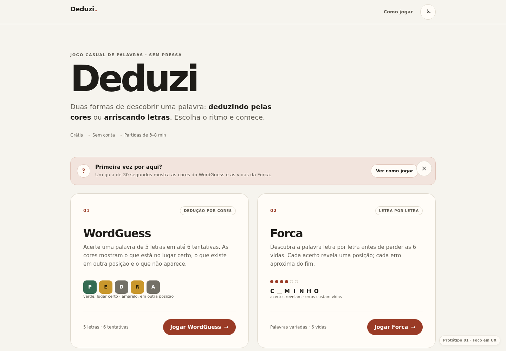
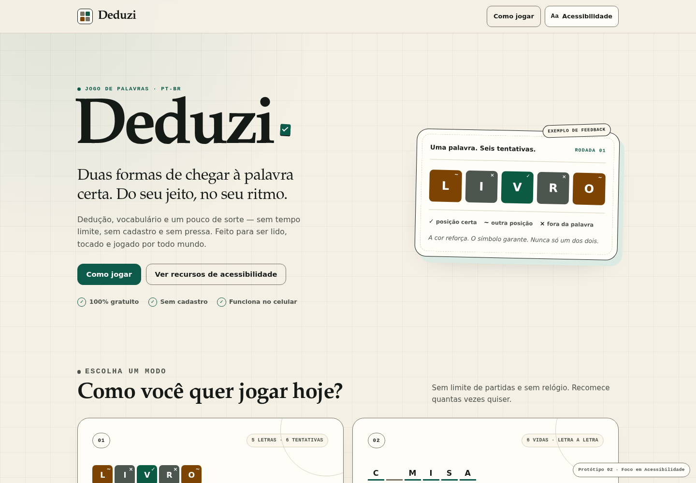
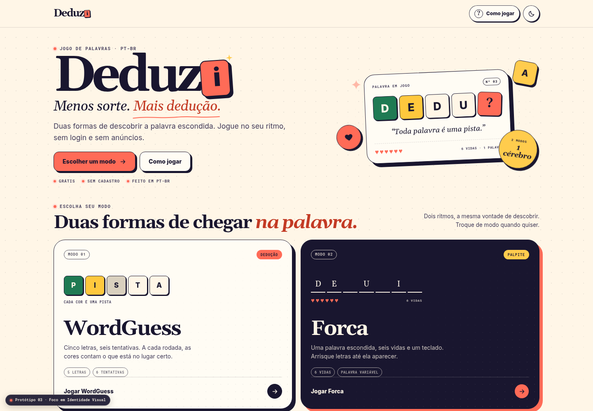

Protótipo 01 · UX
Clareza que guia
Hierarquia editorial, onboarding curto e instruções no contexto para entrar, entender e jogar sem atrito.
UX · Acessibilidade · Identidade visual
Abra uma direção visual e experimente os modos WordGuess e Forca em cada protótipo.

Protótipo 01 · UX
Hierarquia editorial, onboarding curto e instruções no contexto para entrar, entender e jogar sem atrito.

Protótipo 02 · Acessibilidade
Feedback redundante por cor, símbolo e texto, navegação por teclado e preferências de acessibilidade.

Protótipo 03 · Identidade visual
Uma direção de marca expressiva, com cores vivas, tipografia de destaque e detalhes de investigação.